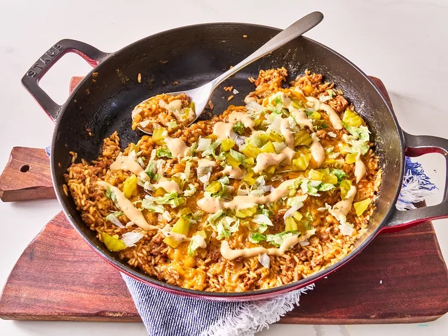

Cheeseburger Rice
Home

This one pan cheeseburger rice can be made with either ground turkey or ground beef. Topped with broiled cheese and served with a tasty burger sauce, plus dill pickles if you like, it's a quick and easy every day rice dish.
Ingredients
- 1 tablespoon oil
- 1/2 medium onion, finely chopped
- 1 pound ground turkey or ground beef
- 1 teaspoon kosher salt
- 3/4 teaspoon freshly ground black pepper, divided
- 1/2 teaspoon garlic powder
- 4 tablespoons ketchup, divided
- 2 1/2 tablespoons Worcestershire sauce
- 1 (14.5 ounce) can beef broth
- 1/4 cup water
- 1 cup rice
- 3 tablespoons mayonnaise
- 2 teaspoons yellow mustard
- 8 ounces Cheddar cheese, shredded
- chopped dill pickles and lettuce
Steps
- Heat oil in a large, deep oven–proof skillet over medium-high heat. Add onion and cook, stirring constantly, 1 minute. Add ground turkey and cook, crumbling with a spoon until lightly browned, about 7 minutes.
- Season with salt, 1/2 teaspoon pepper, garlic powder, 3 tablespoons ketchup, and Worcestershire sauce and stir to combine. Add broth and water and bring to a boil, stirring often to loosen any browned bits from the bottom of the pan.
- Stir in rice and return to a boil. Cover and reduce heat to medium-low and simmer until liquid is absorbed and rice is tender, about 20 minutes. Add up to 1/4 cup additional water if needed if liquid is evaporated before rice is tender.
- Just before it is finished, stir in 1 1/4 cups of cheese to rice mixture and top with remaining cheese.
- Broil in the preheated oven just until cheese is melted and bubbly, about 3 minutes. Let stand for 5 minutes before serving.
- Meanwhile, for burger sauce, add remaining pepper and remaining ketchup with mayonnaise and mustard in a small bowl. Stir until well combined and set aside. Serve topped with pickles, lettuce, and burger sauce.